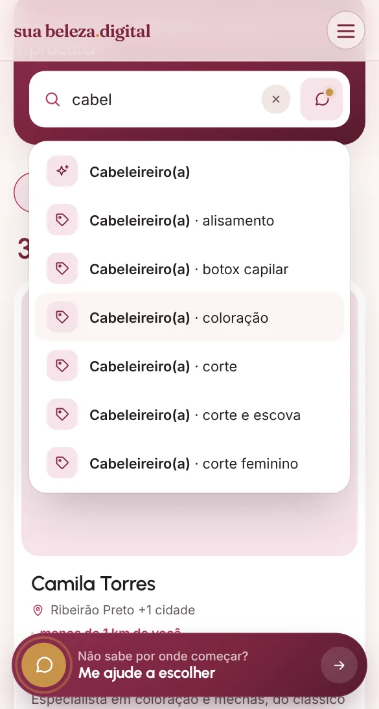
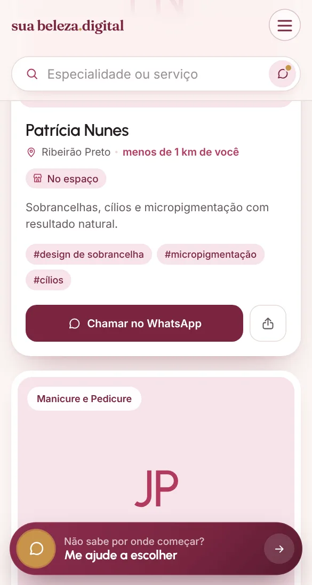

Pela especialidade
Escreva o que procura, como "cabeleireira". As sugestões aparecem enquanto você digita.

Cabelo, pele, unhas, maquiagem. Na hora de escolher, a busca começa do zero: no grupo das amigas, no Instagram, no Google.
E é aí que muita gente desiste ou escolhe no escuro.
Indicação de amiga é de confiança, mas funciona como uma corrente: cada elo pode se perder no caminho. E ótimos profissionais ficam invisíveis só porque ninguém do seu círculo passou por eles.
Dias de mensagem para chegar em um nome.
"Acho que é perto do centro." Sem endereço, sem WhatsApp, sem foto do trabalho.
Você só conhece quem as pessoas ao seu redor já conhecem.
E se a indicação certa estivesse a um toque de distância?
Reunimos os melhores profissionais de beleza num só lugar e conectamos cada um a quem está procurando. Você diz o que quer, a gente mostra quem faz, e você chama direto no WhatsApp.
E talvez a profissional certa esteja a poucos quilômetros de você, e ninguém do seu círculo conheça.
Veja cada função funcionando no celular. No computador é do mesmo jeito.
Deslize para o lado para ver os seis passos →
Escreva o que procura, como "cabeleireira". As sugestões aparecem enquanto você digita.

Não sabe por onde começar? Conte no chat e veja qual profissional procurar.
O card já mostra se atende no espaço ou a domicílio. No perfil, aparecem os detalhes.
Com a localização ligada, a lista vai do mais perto ao mais longe.
O endereço do perfil abre direto no Google Maps, com o caminho.
Converse direto com o profissional e marque o seu horário.

Conte o que você quer resolver ou realçar, com as suas palavras. O chat mostra por qual profissional começar e quem atende perto de você.
O card e o perfil mostram se o atendimento é no espaço, a domicílio ou os dois.
Não. Para quem procura atendimento é só abrir o site e buscar. Não pedimos cadastro, e-mail nem telefone.
Não. Ele indica por qual profissional costuma começar, como um ponto de partida. Quem avalia e define o serviço é o profissional.
Não. Ela é usada só no seu aparelho, para calcular a distância até cada profissional. A conversa do chat também some quando você fecha a página.
Direto com o profissional, pelo botão "Chamar no WhatsApp" do perfil. Valores, horários e agenda são combinados com ele.
No perfil, toque no endereço sublinhado. Ele abre no Google Maps, com o caminho até o salão.
Cada perfil traz a descrição do trabalho, o espaço e o contato direto. Antes de agendar, converse pelo WhatsApp e tire suas dúvidas.
Veja como funciona para profissionais. Você se cadastra, a gente confirma tudo com você pelo WhatsApp, e a divulgação é por nossa conta.
Você cuida dos clientes. A gente traz eles até você: a divulgação é por nossa conta.